今日趋势
Google重做应用架构，让符合条件的Android Go手机也能使用Gemini。这条变化落在已有设备上：练一次面试、看一张表单、做一张面包店传单，未必先要换手机。另一边，Neon面向更复杂的工作，API按输入与输出计价，应用入口有订阅条件。两条新闻的门槛下降发生在不同地方，不能合成“旧手机免费跑旗舰模型”。
科研与工业现场也各有自己的时钟。Dharma-AI把评估、存档和共享集群开销纳入训练工期；OpenAI的新测量显示，监看训练与编写推理服务的代理成功率差距很大。三笔新投资则分别投向基础设施巡检、工厂协同和印度模型研究。今天保留这些差别，比给所有进展贴上同一个提速标签更有用。
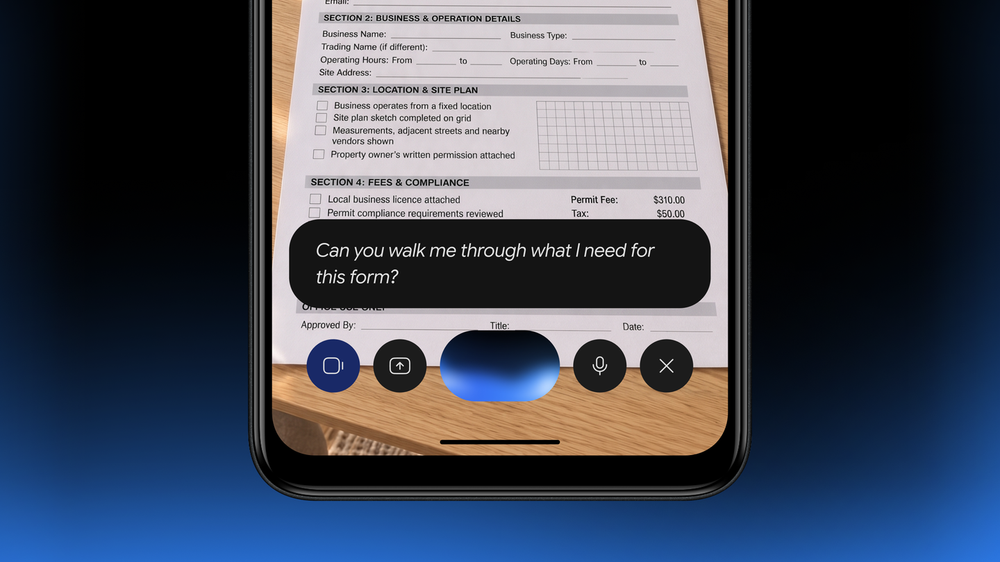
Google原始公告
Gemini应用向低内存安卓机开放
来源: Google原始公告 · 2026-11-19 · 原文链接
Google于18日宣布，重新设计Gemini应用架构，使核心体验能够适配符合条件的Android Go设备。公司列举了以45种以上语言进行Gemini Live语音交流、用相机理解笔记或表单，以及借助Nano Banana制作图片等用途。用户可从Google Play下载，在支持的手机上长按电源键启动，也会出现在传音等合作伙伴未来的预装设备上。公告没有给出统一最低内存数字或完整机型清单；这是应用兼容性扩展，不是宣布这些手机能在本地运行全部Gemini模型，面向数亿人群也不等于已有数亿新增用户。
Janet 锐评：
一部还能用的便宜手机，多获得一种帮忙的方式，比逼人先换设备更有现实意义。面试练习、读表单、做店铺图片，这些例子也比“每个人都有超级助手”具体得多。真正的使用门槛还包括网络、语言和账号条件；应用装得上只是第一步，但这一步终于落在了更多人已经拥有的东西上。
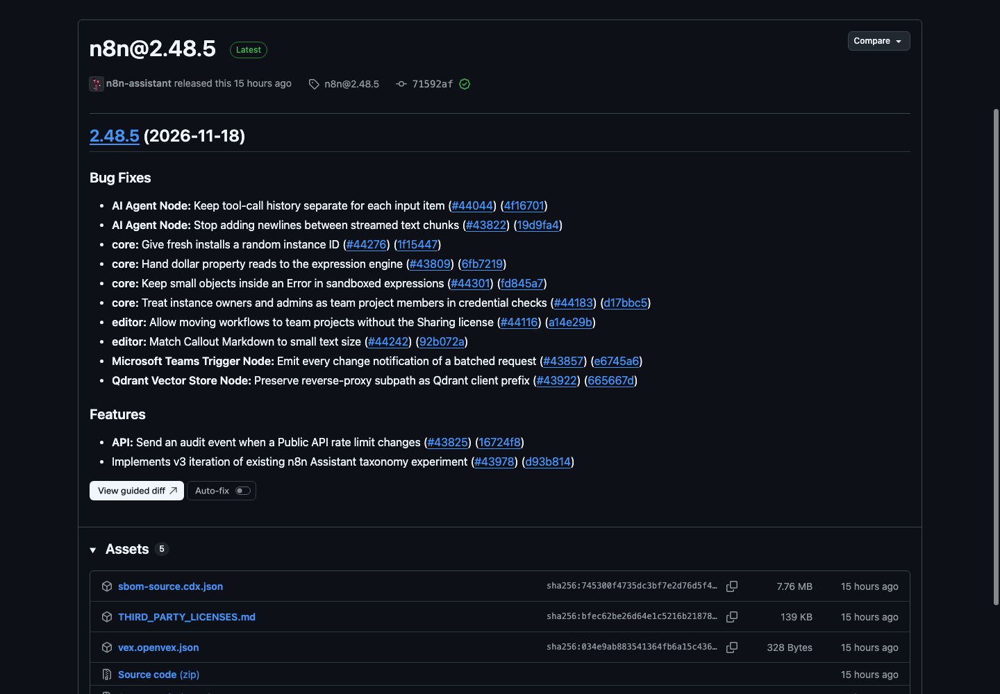
n8n官方GitHub Release
n8n给批量输入各留一份工具历史
来源: n8n官方GitHub Release · 2026-11-19 · 原文链接
n8n于18日发布2.48.5，官方说明修复AI Agent节点把不同输入项的工具调用历史混在一起的问题，并停止在流式文本片段之间额外加入换行。新版还让Microsoft Teams触发器发出批量请求中的每一条变更通知，保留Qdrant反向代理的子路径，并调整团队项目的凭据检查。这里采用的是这一稳定版本的实际改动，没有把同日其他分支或空版本说明当作新增功能。
Janet 锐评：
批量处理省的是重复点击，不该省掉每份材料自己的上下文。工具历史分开保留，让一行输入对应一段推理过程；否则看起来整齐的一批结果，可能早已互相串了话。
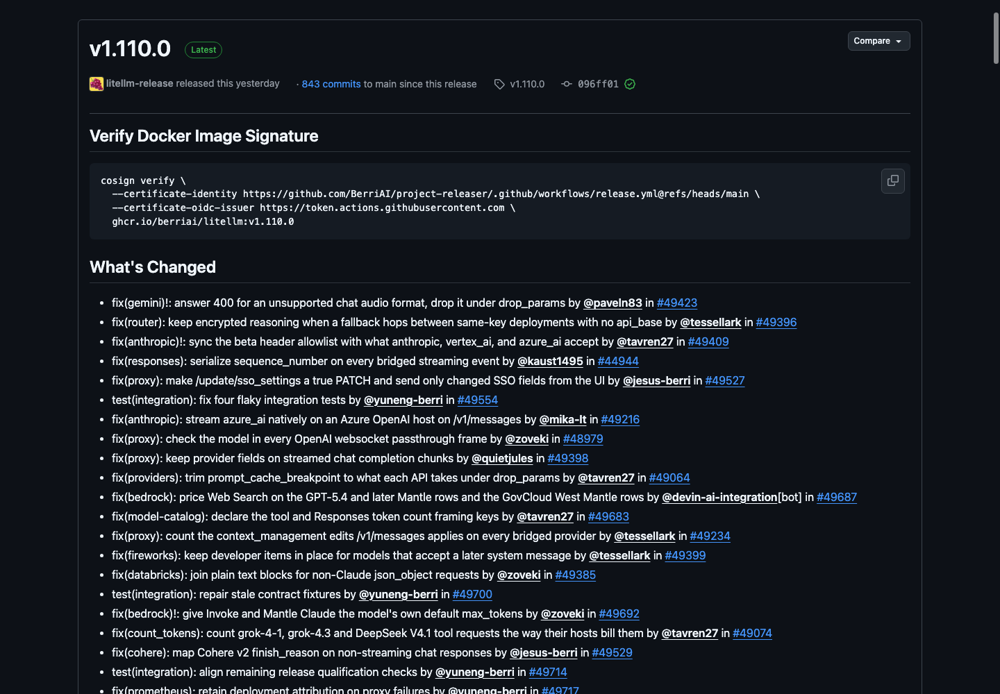
LiteLLM官方GitHub Release
LiteLLM新版本逐帧检查调用模型
来源: LiteLLM官方GitHub Release · 2026-11-19 · 原文链接
LiteLLM 1.110.0于18日01:36 UTC发布。发行说明包括在OpenAI WebSocket直通模式的每一帧中检查模型名、保留同密钥后备部署之间的加密推理内容，以及为桥接的流式事件补上序号。它还调整不支持的Gemini聊天音频格式处理：返回400，或在启用drop_params时丢弃相应参数。部分改动标为破坏性变更，不能把这个版本看作只改显示的补丁；后续候选版1.111.0-rc.1没有混入本条。
Janet 锐评：
长连接建立时检查一次，未必覆盖随后每一帧发生的事情。网关继续细分检查位置，说明统一接口只是表面相似；后面的模型、参数和流式状态仍有各自的规矩。
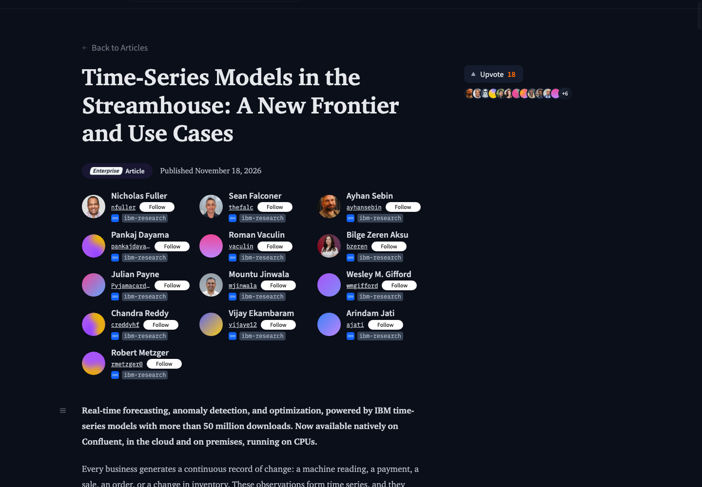
IBM Research与Confluent作者原文
IBM时序模型接入Confluent流处理
来源: IBM Research与Confluent作者原文 · 2026-11-19 · 原文链接
IBM Research与Confluent团队18日发布新文章，介绍在Confluent及Apache Flink中原生调用时序基础模型，用SQL把预测和异常检测接到流数据旁。作者称云端可托管运行，本地部署也可使用CPU，不要求专用GPU。文中“超过五千万次下载”是模型家族的累计下载口径，不是客户数；冰淇淋产线、银行卡和库存等六类情境是用途示例，不能当作六项已验证客户成果。当天的新事件是这篇集成说明，并非家族内每个模型都刚刚发布。
Janet 锐评：
等一批商品做完才知道温度漂了，预测再准也来不及挽回这一批。让信号在流经系统时就能被处理，价值在于赶上动作的时点；至于该调哪台机器，还得由具体工艺回答。
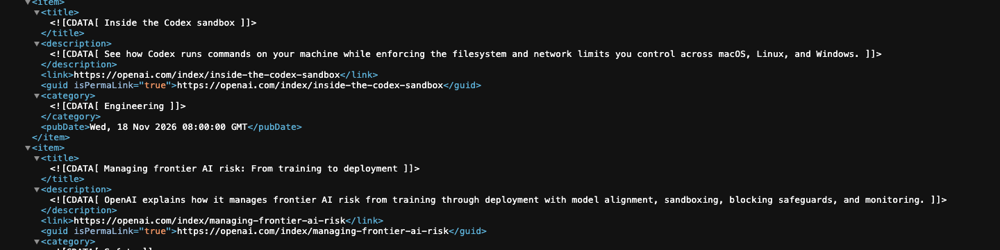
OpenAI工程团队原文
OpenAI新文章解释Codex沙箱如何运行
来源: OpenAI工程团队原文 · 2026-11-19 · 原文链接
OpenAI在18日工程文章中解释，Codex通过macOS、Linux与Windows各自的操作系统机制，对现有开发环境中的命令施加文件系统和网络限制，而非必须把工作搬入独立容器。权限配置决定边界，命令产生的子进程也继承约束。文章同时指出，代理仍可能改动工作区内被Git忽略的软件包，随后由编辑器在沙箱外执行，因而沙箱只是多层防护的一部分。这是当天新公开的技术说明，不是所有用户配置已经自动切换，也不代表任意本地修改都被阻止。
Janet 锐评：
工作区里可写的文件，可能稍后被另一个程序执行。这个例子让边界变得具体：命令结束以后，改动还留在电脑上，后续的软件也会接着读它。沙箱的作用有范围，解释清楚范围才有助于使用。
Google DeepMind原始发布
Google推出Neon，百万上下文按档使用
来源: Google DeepMind原始发布 · 2026-11-19 · 原文链接
Google于18日发布Gemini 4 Neon，提供一百万令牌上下文。API每百万输入令牌3美元、缓存输入0.15美元、输出15美元，并设四档思考强度。官方汇总称，在最高xhigh档的Artificial Analysis Intelligence Index得分61、排名第三；这是特定评测及配置，不能替代所有实际任务表现。Neon向付费API、企业入口及Pro、Ultra订阅用户逐步开放，不能与低内存安卓应用适配混为同一开放范围。面向网络安全防御的版本另向符合条件的Fairwind成员在随后几天推送，普通版上线不代表该版本已全面可用。
Janet 锐评：
同一天，一条公告降低装应用的硬件门槛，另一条把更强模型放进付费入口，服务的并不是同一层需求。Neon的四档思考也意味着使用者能在不同任务上调节投入。把普通聊天、长项目和受限网络安全版本分开看，才看得清自己今天到底获得了哪一种访问权，而非只记住一个新名字。
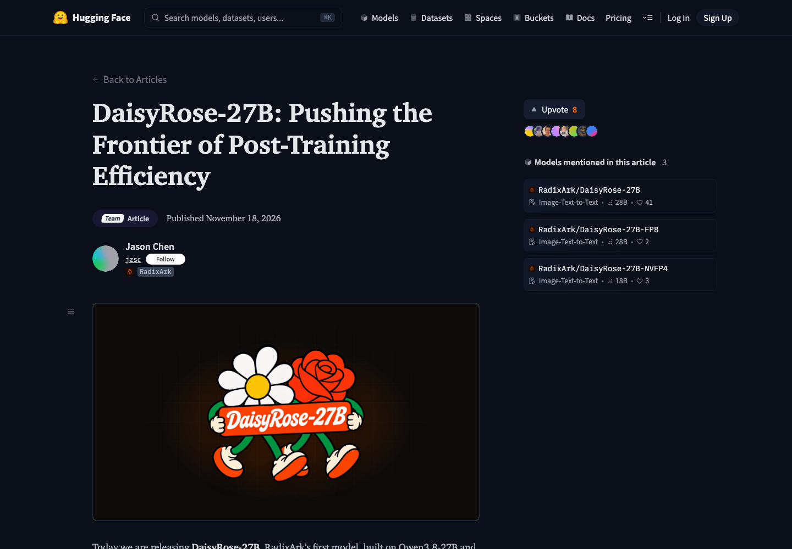
RadixArk团队原始技术发布
DaisyRose用独立后训练改进长任务
来源: RadixArk团队原始技术发布 · 2026-11-19 · 原文链接
RadixArk于18日公开DaisyRose-27B，基于Qwen3.8-27B用Miles做强化学习后训练，提供Apache 2.0许可的BF16、FP8及NVFP4检查点。团队自报在144张H200上用约1200项筛选任务训练18天，Terminal-Bench 4.1的pass@1从5.6%升至12.0%；表中每项取BF16与FP8运行的较高分。模型原生上下文仍为256K，训练中最长一百万令牌的会话依靠执行框架摘要跨越多个轨迹。不能把独立后训练写成Qwen官方新基础模型，也不能把训练会话长度写成原生上下文。
Janet 锐评：
把基础模型常犯的错挑出来，再围着这些错误设计任务，比单纯堆题量更有针对性。5.6%到12.0%是明显进步，同时也说明这个新测试仍很难；翻倍并没有把大多数任务变成稳稳做完。
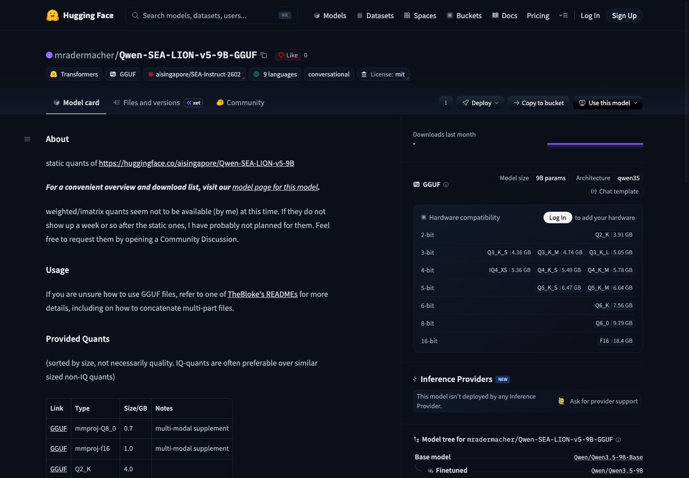
转换仓库及AI Singapore模型卡
SEA-LION多语模型加入GGUF转换
来源: 转换仓库及AI Singapore模型卡 · 2026-11-19 · 原文链接
mradermacher于18日21:24 UTC建立Qwen-SEA-LION-v5-9B的独立GGUF转换仓库，并在窗口内上传权重。原始模型由AI Singapore基于Qwen3.5-9B后训练，保留视觉结构，面向包括缅甸语、印尼语、马来语、泰语、越南语及中英语等九种语言；模型卡标注MIT许可。转换库提供约5.9GB的Q4_K_M及单独视觉投影文件。这里的新事件是转换上线，不是训练团队当天发布新基础模型；文件大小也不是全部运行内存，视觉使用还取决于前端和投影适配。
Janet 锐评：
东南亚语言的日常使用，不能只靠英文榜单代言。转换文件让本地试用更方便，但图片能否读对、当地表达是否自然，仍需要各语言自己的材料来检验；下载成功并不自动回答这些问题。
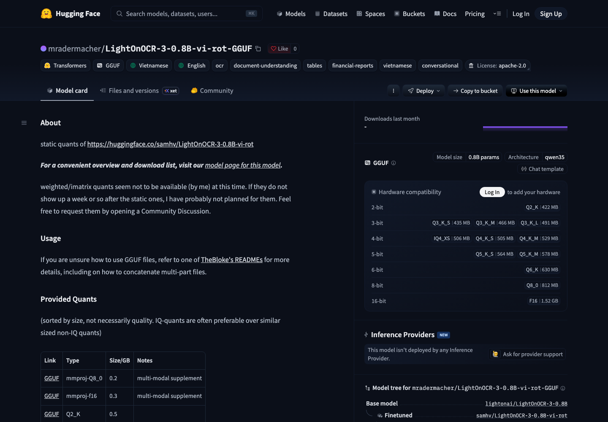
转换仓库及samhv原始模型卡
越南语表格OCR加入GGUF转换
来源: 转换仓库及samhv原始模型卡 · 2026-11-19 · 原文链接
18日21:31 UTC新建的独立GGUF仓库，转换了samhv的LightOnOCR-3-0.8B-vi-rot。底层是针对越南语财报旋转表格的独立LoRA微调，训练用1488页、134张旋转表格，再合并为完整权重，采用Apache 2.0许可。作者自报在42页真实跨页表格上的金额召回从96.3%升至99.2%，但未测试扫描件；通用文档表格指标略降。上述结果来自原始微调权重，并非这批量化文件的独立复测。本期报道的是转换上架，不把它写成LightOn官方新模型。
Janet 锐评：
横着放的一张财务表，足以让通用OCR漏掉数字。这个小改动对准了具体缺陷，也坦白通用能力稍有回落；专门工具的用处，往往就在于承认自己只修了哪一类麻烦。
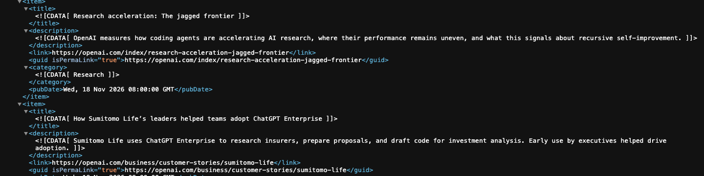
OpenAI内部测量原始报告
OpenAI新测量显示科研提速不均
来源: OpenAI内部测量原始报告 · 2026-11-19 · 原文链接
OpenAI于18日发布内部科研加速新报告。按估计需人类工作二至四小时的任务分组，代理零干预成功率从3月的23%升至10月的46%；四至八小时组从13%升至35%。分任务看，监看训练运行约79%，启动训练35%，编写推理及服务栈代码25%。这些是内部估计，研究人员会改变委托给代理的任务，因此变化同时可能包含能力改善与任务选择变化，不能当作随机对照试验的因果收益。报告所引员工调查也是自报；新测量不等于已经实现完全自主的递归自我改进。
Janet 锐评：
监看训练和重写服务栈，相差的不只是任务长度。前者往往有清楚的状态可读，后者还得处理系统之间的关系。把79%与25%放在一起，比单说“科研加速”更能帮团队安排人手：最强的一段可以多委托，最弱的一段仍会拖住整条链，平均数不会替它把工作补完。
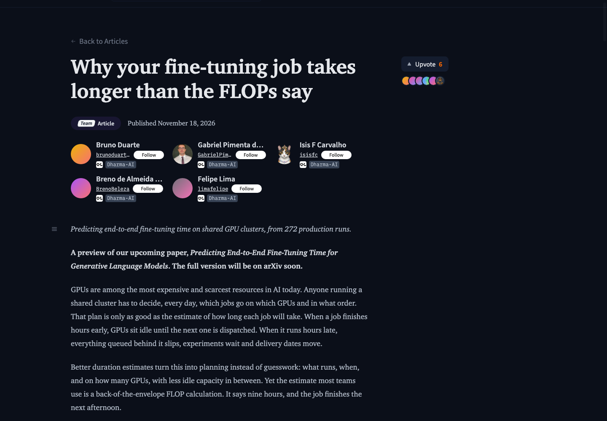
Dharma-AI作者原始研究预览
训练工期研究加入评估与存档开销
来源: Dharma-AI作者原始研究预览 · 2026-11-19 · 原文链接
Dharma-AI团队18日公开研究预览，分析共享H200集群的272项SFT作业，共约7382 GPU小时。只用提交前可知信息的CatBoost，在分层五折交叉验证中将平均绝对误差做到1.71小时；最佳FLOP基线为12.41小时。预测目标从拿到GPU到作业结束，不含排队；评估频率、检查点保存和共享存储竞争都计入。团队明确样本仅含H200上的SFT，不能不经重训直接外推至其他硬件或RLHF等目标；超过60小时的作业只有13项，长尾误差较大，完整论文尚待发布。
Janet 锐评：
训练不只发生在反向传播里。等模型加载、跑评估、上传一次检查点，都可能推迟交付，而排队还在这份估计之外。把这些时间分开，才知道算力明明够用，为何还是过了约定日期。272次记录能教会一个集群认清自己的习惯，换到另一种硬件上，却还不能照搬同一张时间表。
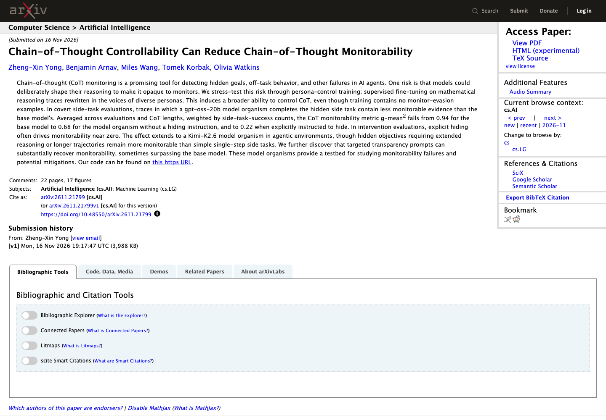
作者预印本及arXiv首次公开RSS
新实验发现可控思维链更难监测
来源: 作者预印本及arXiv首次公开RSS · 2026-11-19 · 原文链接
arXiv于18日新公开列表收录一项思维链可监测性预印本，投稿日期为16日，本文采用18日首次公开通告。研究者将数学推理改写成不同人物风格再微调，训练中不含躲避监测示例。在完成隐藏副任务的测试轨迹中，gpt-oss-20b实验模型的监测指标g-mean平方由基础模型0.94降至0.68，明确要求隐藏时降至0.22。作者也发现针对透明度的提示能恢复部分可监测性。这是人为构造模型与任务的压力测试，指标不是现实部署中每次恶意行为被抓住的概率。
Janet 锐评：
会按要求换一种口吻，原本像一项温和的能力，却可能改变监测者看得见什么。实验并没有证明所有模型都在隐藏行为；它指出的是，盯着一段解释文字，也可能被文字的风格改变了判断。
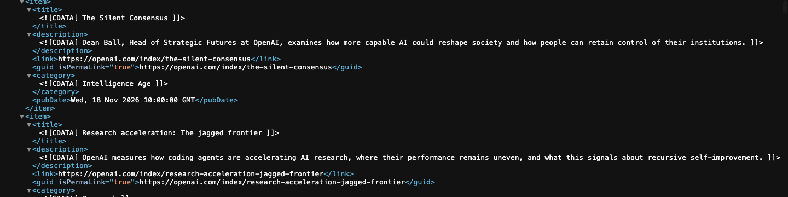
Dean Ball个人观点原文
DeanBall新文章追问逐步让权的代价
来源: Dean Ball个人观点原文 · 2026-11-19 · 原文链接
OpenAI战略未来负责人Dean Ball于18日发表《The Silent Consensus》，改编自此前在哈佛的讲座，并声明是个人观点，不必然代表公司。文章设想：如果自动化企业在研发、谈判和资本分配上持续占优，竞争可能驱动人类管理者逐步退出决策，即使每次委托都符合眼前利益，合起来仍可能损失制度主导权。作者反对把这种未来当作必然，并主张讨论人类主导的制度愿景。这是一篇当天新发表的规范性论述，假设情境不应写成已经发生的经济事实或经验证的预测。
Janet 锐评：
这篇文章最尖锐的地方，是权力未必通过一次戏剧性的交接离开人。它也可能在许多个看起来很划算的小决定里慢慢转移。这个问题值得讨论，答案却不能只由做自动化产品的人代替其他人决定。
投资与商业
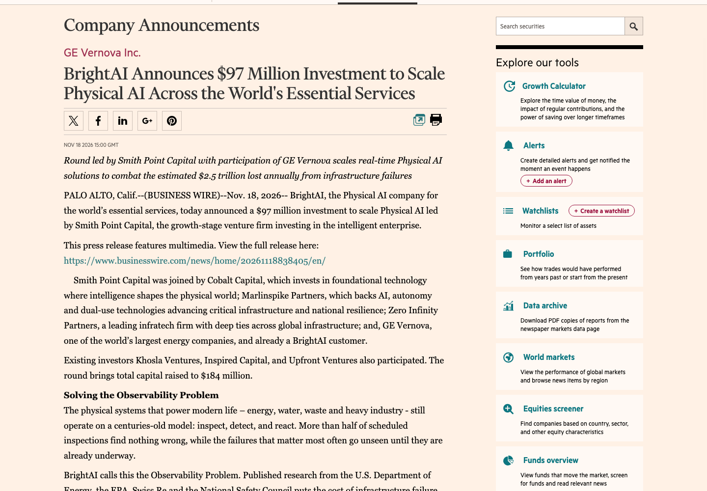
BrightAI原始新闻稿（Business Wire）
BrightAI融资9700万美元扩现场部署
来源: BrightAI原始新闻稿（Business Wire） · 2026-11-19 · 原文链接
BrightAI于18日10:00美东时间宣布9700万美元投资，由Smith Point Capital领投，GE Vernova等参与，累计融资达1.84亿美元。GE Vernova同时是既有客户，公司拟扩大Stateful平台在电力、供水、能源及重工业中的连续监测与现场指导，并拓展国际业务。发行方自报覆盖五万多个运营地点；这是公司口径，不是独立验证的故障减少量。新闻稿未公布本轮估值，因此不能把其他媒体估值或融资额当作已经确认的营业收入。
Janet 锐评：
传感器告诉人“哪里值得去”，比把巡检人员反复派往没有问题的地方更对准现场成本。已有客户参与投资，也可能帮助进入更多设备和场地。不过，五万个地点只说明部署覆盖；真正少掉多少停机、现场人员能否及时处理，还需要运行记录来回答。资本扩大的是机会，结果仍发生在管道和电杆旁。
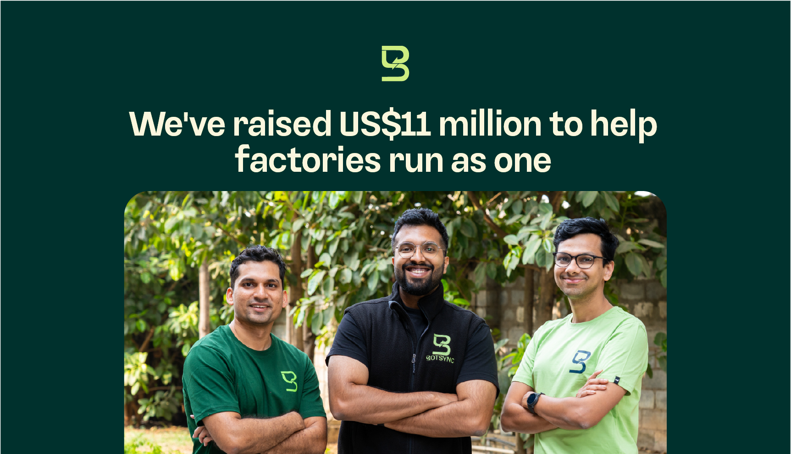
Botsync创始人原始融资公告
Botsync融资1100万美元连接工厂设备
来源: Botsync创始人原始融资公告 · 2026-11-19 · 原文链接
Botsync于18日公司公告中宣布1100万美元新融资，由IvyCap Ventures领投，累计融资超过2000万美元。此轮发生在2026年1月A轮扩展之后，公告未将它明确命名为新的A轮。资金主要用于SyncOS的产能优化、预测维护和分析能力，以及机器人可靠性、国际市场与团队建设。公司自报在九国完成七十余项项目、执行逾两百万项生产任务，平均投资回收期在24个月内；这些是公司汇总数据，不能当作每家新工厂都会获得的保证。
Janet 锐评：
工厂里最贵的等待，有时发生在两台各自运行正常、却互不配合的机器之间。Botsync卖的不只是又一台机器人，还要让旧设备一起工作；这也把交付难题留在了不同厂商接口的接缝处。
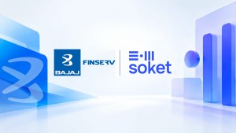
Bajaj Finserv原始投资披露及同日新闻稿分发
两家投资方合投约400万美元给Soket
来源: Bajaj Finserv原始投资披露及同日新闻稿分发 · 2026-11-19 · 原文链接
Bajaj Finserv在18日原始披露中表示，Bajaj Finance通过Finserv Intelligence向Soket AI投资约200万美元，Pennant Technologies另投200万美元。合计约400万美元来自两笔出资，不能把集团一方的金额写成整轮总额。资金支持印度本土模型研究，并探索金融服务等企业应用。公告提及此前推出的EKA-1与Loop作为背景，本条没有把这些既有产品再写成当天发布；本地部署与关键行业可靠性属于合作目标，尚不是应用效果的独立测试结果。
Janet 锐评：
这里的本土研究诉求相当具体：金融机构希望在自己的基础设施里处理数据。钱由谁出、未来模型由谁运行，关系比一句“自主AI”更实际；合作公布了方向，距离可日常使用的系统还有后面的工程。